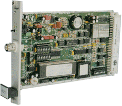

Last update: 21-Oct-2010 23:44 UTC
|
 |
The refclock_hopf_serial driver supports hopf electronic receivers with serial Interface kompatibel 6021.
Additional software and information about the software drivers is available from: http://www.ATLSoft.de/ntp.
Latest NTP driver source, executables and documentation is maintained at: http://www.ATLSoft.de/ntp
The hopf clock driver has been tested on the following software and hardware platforms:
|
Platform |
Operating System |
|
i386 (PC) |
Linux |
|
i386 (PC) |
Windows NT |
|
i386 (PC) |
Windows 2000 |
The user is expected to provide a symbolic link to an available serial port device. This is typically performed by a command such as:
ln -s /dev/ttyS0 /dev/hopfclock0Windows NT does not support symbolic links to device files.
as specified in clock manual under pt. [ Data String for NTP ( Network Time Protocol ) ]
Bernd Altmeier
Ing.-Büro für Software www.ATLSoft.de